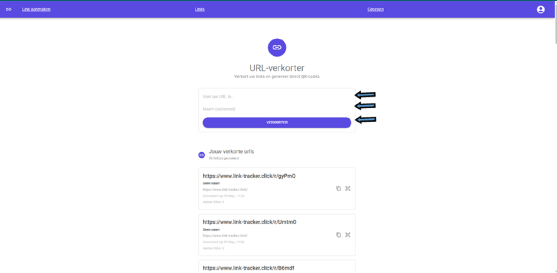
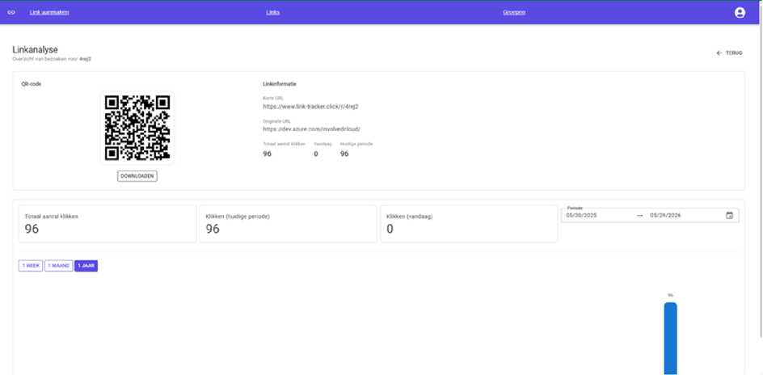

Stage
Wat ik leerde tijdens mijn stage bij Involved
Tijdens mijn stage bij Involved werkte ik aan een URL-shortener applicatie met een webinterface, mobiele ondersteuning en cloudintegratie. Het project gaf mij de kans om technische keuzes niet alleen uit te voeren, maar ook beter te begrijpen, te onderbouwen en duidelijk uit te leggen.
Van idee naar werkende applicatie
Een URL-shortener lijkt op het eerste zicht eenvoudig: je voert een lange link in en krijgt een korte link terug. In de praktijk komt er echter veel meer bij kijken, omdat de applicatie links betrouwbaar moet opslaan, redirects snel moet uitvoeren, gebruikers een duidelijke interface moet geven en fouten op een nette manier moet afhandelen.
Ik werkte met .NET, Blazor, MudBlazor, REST API's en Microsoft Azure. Daardoor leerde ik hoe de frontend, backend en cloudomgeving samenkomen in een volledige applicatie die niet alleen lokaal, maar ook in een echte omgeving moet blijven werken. Vooral de koppeling tussen de API-laag en de gebruikersinterface maakte duidelijk hoe belangrijk duidelijke afspraken zijn tussen de verschillende onderdelen van een systeem.

Wat ik technisch sterker heb gemaakt
De stage hielp mij groeien in full-stack ontwikkeling, omdat ik aan verschillende lagen van dezelfde applicatie werkte. Ik kreeg meer inzicht in hoe je data structureert, endpoints opbouwt, validatie toepast en componenten maakt die prettig werken voor gebruikers. Daarnaast werd ik bewuster van onderhoudbaarheid: code moet niet alleen vandaag werken, maar later ook begrijpelijk blijven.

Ook cloudservices speelden een belangrijke rol in het project. Door met Azure te werken zag ik hoe deployment, configuratie en infrastructuur invloed hebben op de manier waarop je software bouwt en beheert. Dat maakte de stap van lokaal ontwikkelen naar een echte omgeving veel concreter.
Belangrijkste les
De grootste les was dat goede software niet alleen draait om code schrijven. Het gaat ook om helder communiceren, keuzes documenteren, feedback verwerken en stap voor stap blijven verbeteren. Die manier van werken neem ik bewust mee naar mijn volgende projecten.